12. Hückel Theory#
👩🏽💻 Assignment: Complete the Below Notebook#
To do this, complete the code blocks indicated by ### START YOUR CODE HERE and ### END YOUR CODE HERE .
The detailed steps you’ll follow are:
Read the theoretical background of the Hückel method and its revisions.
Complete a function for evaluating the MO coefficients, MO energies, and total energy from the Hückel Hamiltonian.
Complete a function to evaluate the adjacency matrix for a polyacetylene.
Plot molecular orbitals for some aromatic molecules.
Complete a function to evaluate the transition density between two orbitals.
Complete a function to evaluate the transition dipole moment between two orbitals.
Complete a function to plot the absorbance spectrum of an aromatic molecule.
Motivation of Hückel Theory#
Huckel theory is the simplest method for evaluating the molecular orbitals of systems with one (active, valence) electron per center. In chemistry, Huckel theory is usually used to model \(\pi\)-electron systems. Ali Alavi wrote an excellent tutorial review of Hückel theory.
It is a deep result that for in \(\pi\)-electron systems, the \(\sigma\)-bond framework can be neglected. The essential requirement is that we write the wavefunction as a product of a \(\sigma\)-bond framework and a \(\pi\)-electron part. The \(\sigma\)-bond framework is assumed to be known and fixed, and the \(\pi\)-electron part is the part we are interested in. I.e., we assume:
There are several different models for the \(\pi\)-electron framework, but the simplest is Hückel theory. Assume that a conjugated molecule lies in the \(xy\)-plane; then the \(\pi\)-electrons are in \(p_z\)-orbitals. The \(2p_z\) orbitals (one for each conjugated atom) will be the basis for the system. The \(\pi\)-electron part of the wavefunction is then a Slater determinant of molecular orbitals, each of which is a linear combination of the atomic \(2p_z\) orbitals. Since there is just one spatial orbital per atom, we can just index the orbitals by their atomic labels, and the molecular orbitals can be written as:
where \(\chi_A(\mathbf{r})\) is a \(2p_z\) orbital on atom \(A\).
A Slater determinant of the \(\pi\)-molecular orbitals is the exact wavefunction only if we neglect electron-electron repulsion between the \(\pi\)-electrons. The resulting \(\pi\)-electron Hamiltonian has the form:
where \(v(\mathbf{r})\) is the electron-nuclear attraction potential and \(w_{\sigma}(\mathbf{r})\) is the electron-electron repulsion potential due to the \(\sigma\)-electrons. The equations for the molecular orbitals are:
Multiplying on the left by \(\chi_A^*(\mathbf{r})\) and integrating over all space, we get:
This is a secular equation,
To obtain Hückel theory, we make the following approximations:
The atomic orbitals are orthogonal. This means the overlap matrix is the identity matrix.
This is (superficially) an approximation, but this equation can be satisfied by Löwdin (a.k.a. symmetric) orthogonalization of the atomic orbitals, so it is not a fundamental limitation.
The Hamiltonian matrix elements, \(h_{AB}\) are zero unless \(A=B\) (diagonal terms) or atoms \(A\) and \(B\) are bonded to each other.
Building the Hückel Hamiltonian#
We will build the Hückel Hamiltonian for two types of simple molecules: polyacetylenes (linear polyenes, \(\ce{H2C(CH)_nCH2}\)) and annulenes (cyclic polyenes \(\ce{(CH)_n}\)). These are especially interesting because the molecular orbital energies (and the orbitals themselves) are known analytically.
\(n\)-Carbon Polyacetylenes; \(\ce{H2C(CH)_{n-2}CH2}\)#
The Hamiltonian matrix is:
or, more explicitly:
The molecular orbital energies are:
and the molecular orbital coefficients are:
where
It is not coincidental that the coefficients have the same form as a particle-in-a-box: one can think of the electrons as moving back and forth along the chain, but unable to move off the chain.
\(n\)-Carbon Annulenes; \(\ce{(CH)_n}\)#
The Hamiltonian matrix is:
or, more explicitly:
The extra factors of \(\beta\) in the corners of the Hamiltonian matrix are due to the fact that the first and last atoms are bonded together.
The molecular orbital energies are:
and the molecular orbital coefficients are:
where
The notation \(\lfloor x \rfloor\) indicates the “floor” function: the greatest integer less than or equal to \(x\). Note that because \(\cos(x) = \cos(-x)\), all the orbitals except the lowest (and, for even \(n\), the highest) are doubly degenerate. It is not coincidental that the molecular orbital coefficients look like the wavefunction form of a particle-in-a-ring: the electrons are moving around the ring. The last allowable quantum number only appears for even \(n\).
📝 Exercise: Verify that the molecular orbital energies and coefficients reported for annulenes and polyacetylenes are correct.#
Numerical Implementation: Annulenes#
The easiest way to build a Hückel Hamiltonian is to construct an adjacency matrix for the molecule, then multiply it by the \(\beta\) parameter and add \(\alpha\) to the diagonal. The adjacency matrix, \(\mathbf{A}\) is a matrix with elements \(a_{ij}\) equal to 1 if atoms \(i\) and \(j\) are bonded, and 0 otherwise. For annulenes, the adjacency matrix is a circulant matrix with 1s on the first and last off-diagonals.
We want to check that the implementation is correct. We can do this by writing functions that evaluate the MO energies and coefficients exactly, then comparing the numerical results to the exact results.
The complication occurs because for degenerate MOs, any linear combination of the degenerate MOs is also an MO with the same energy. To compare the MO coefficients, we prove that each computed MO is exactly a linear combination of the two degenerate exact MOs. Specifically, we denoting the computed MOs as \(\tilde{\phi}_p(\mathbf{r})\) and the degenerate exact MOs as \(\phi_{p}(\mathbf{r})\) and \(\phi_{p'}(\mathbf{r})\), we want to show that:
!pip install rdkit # Not necessary if running locally and rdkit is already installed.
import numpy as np
def get_adjacency_annulene(n):
"""Return the adjacency matrix of an annulene, CnHn, with n vertices.
Parameters
----------
n : int
The number of atoms in the annulene, CnHn.
Returns
-------
numpy.ndarray (shape = (n, n))
The adjacency matrix of the annulene.
Examples
--------
>>> get_adjacency_annulene(5)
array([[0., 1., 0., 0., 1.],
[1., 0., 1., 0., 0.],
[0., 1., 0., 1., 0.],
[0., 0., 1., 0., 1.],
[1., 0., 0., 1., 0.]])
"""
# Make sure that the number of vertices is at least 3,
# as the smallest annulene is cyclopropene.
if n < 3:
raise ValueError("The smallest annulene is cyclopropene.")
# Return the adjacency matrix of the annulene.
adjacency = np.zeros((n, n))
for i in range(n):
# Each atom, i, is bonded to the atom preceding it in the ring.
# This approach uses the fact that the -1 index refers to the last
# element in the array.
adjacency[i, i - 1] = 1
# Each atom is also bonded to the atom following it in the ring; we construct
# this by adding the tranpose of the adjacency matrix to itself.
adjacency = adjacency + adjacency.T
return adjacency
def get_huckel_hamiltonian_adjacency(adjacency, alpha=None, beta=None):
"""Return the Huckel Hamiltonian for a given adjacency matrix.
Parameters
----------
adjacency : numpy.ndarray (shape = (n, n))
The adjacency matrix of the annulene.
alpha : float
The alpha parameter in the Huckel Hamiltonian.
The default value is the -0.414, corresponding to the carbon atom.
beta : float
The beta parameter in the Huckel Hamiltonian.
The default value is the -0.533, corresponding to the carbon-carbon bond.
Returns
-------
numpy.ndarray (shape = (n, n))
The Huckel Hamiltonian from the adjacency matrix, in atomic units (Hartree)
Examples
--------
>>> adjacency = get_adjacency_annulene(5)
>>> get_huckel_hamiltonian_adjacency(adjacency,alpha=-2.0,beta=-1.0)
array([[-2., -1., 0., 0., -1.],
[-1., -2., -1., 0., 0.],
[ 0., -1., -2., -1., 0.],
[ 0., 0., -1., -2., -1.],
[-1., 0., 0., -1., -2.]])
"""
# Check to make sure that the adjacency matrix is square, symmetric, has
# only 0s and 1s, has no diagonal elements, and has no more than 1 bond.
n, m = adjacency.shape
if n != m:
raise ValueError("The adjacency matrix is not square.")
if n < 2:
raise ValueError("There should be at least two atoms.")
if not np.allclose(adjacency, adjacency.T):
raise ValueError("The adjacency matrix is not symmetric.")
if not np.all(np.logical_or(adjacency == 0, adjacency == 1)):
raise ValueError("The adjacency matrix has elements other than 0 and 1.")
if np.any(np.diag(adjacency) != 0):
raise ValueError("The adjacency matrix has non-zero diagonal elements.")
# Set default values for alpha and beta if not provided. These are
# taken from Rauk's work, as encapsulated in the ModelHamiltonian package.
# https://github.com/theochem/ModelHamiltonian
# The values are in atomic units (Hartree).
if alpha is None:
alpha = -0.414
if beta is None:
beta = -0.0533
# Construct the Huckel Hamiltonian.
hamiltonian = np.zeros((n, n))
# alpha times the identity matrix (for the diagonal) plus beta times the adjacency matrix.
hamiltonian += alpha * np.eye(n) + beta * adjacency
return hamiltonian
def solve_huckel(hamiltonian, n_electrons=None):
"""Return the total energy and the MO energies/coefficients for the Huckel Hamiltonian.
Parameters
----------
Hamiltonian : numpy.ndarray (shape = (n, n))
The Huckel Hamiltonian. But any Hamiltonian could be used.
n_electrons : int
The number of electrons in the annulene. If not provided, the number of
electrons is assumed to be the number of atoms.
Returns
-------
numpy.ndarray (shape = (n,))
The eigenvalues of the Huckel Hamiltonian.
numpy.ndarray (shape = (n, n))
The eigenvectors of the Huckel Hamiltonian.
float
The total energy of the system.
"""
# Check to make sure that the Hamiltonian is square.
n, m = hamiltonian.shape
if n != m:
raise ValueError("The Hamiltonian is not square.")
if n < 2:
raise ValueError("There should be at least two atoms.")
# If the number of electrons is not provided, assume it is the number of atoms.
if n_electrons is None:
n_electrons = n
# Solve the Huckel Hamiltonian.
mo_energies, mo_coeffs = np.linalg.eigh(hamiltonian)
# Calculate the total energy.
# There are two electrons per MO, so we sum over the first
# n_electrons/2 MOs.
#
# However, if the number of electrons is odd, there is a singly-occupied
# MO that contributes to the total energy.
total_energy = 2 * np.sum(mo_energies[: n_electrons // 2])
if n_electrons % 2 == 1:
total_energy += mo_energies[n_electrons // 2]
return mo_energies, mo_coeffs, total_energy
Collecting rdkit
Downloading rdkit-2025.9.6-cp314-cp314-manylinux_2_28_x86_64.whl.metadata (3.8 kB)
Requirement already satisfied: numpy in /opt/hostedtoolcache/Python/3.14.3/x64/lib/python3.14/site-packages (from rdkit) (2.4.3)
Requirement already satisfied: Pillow in /opt/hostedtoolcache/Python/3.14.3/x64/lib/python3.14/site-packages (from rdkit) (12.1.1)
Downloading rdkit-2025.9.6-cp314-cp314-manylinux_2_28_x86_64.whl (36.7 MB)
?25l ━━━━━━━━━━━━━━━━━━━━━━━━━━━━━━━━━━━━━━━━ 0.0/36.7 MB ? eta -:--:--
━━━━━━━━━━━━━━━━━╺━━━━━━━━━━━━━━━━━━━━━━ 15.7/36.7 MB 90.5 MB/s eta 0:00:01
━━━━━━━━━━━━━━━━━━━━━━━━━━━━━━━━━━━━━━━━ 36.7/36.7 MB 101.7 MB/s 0:00:00
?25h
Installing collected packages: rdkit
Successfully installed rdkit-2025.9.6
def check_huckel_annulene(n):
"""Check the Huckel theory for an annulene, CnHn, with n vertices.
Parameters
----------
n : int
The number of atoms in the annulene, CnHn.
Returns
-------
None
The function fails with an informative error message if the
numerical results do not match the expected results.
"""
# Check that n is an integer larger than 2.
if not isinstance(n, int):
raise ValueError("The number of atoms must be an integer.")
if n < 3:
raise ValueError("The smallest annulene is cyclopropene.")
# Get the adjacency matrix of the annulene.
adjacency = get_adjacency_annulene(n)
# Get the Huckel Hamiltonian from the adjacency matrix.
hamiltonian = get_huckel_hamiltonian_adjacency(adjacency)
# Solve the Huckel Hamiltonian.
mo_energies, mo_coeffs, total_energy = solve_huckel(hamiltonian)
# Compute the exact MO energies and MO coefficients
# for the annulene. To do this, we need to know what the values of
# alpha and beta are. We extract them from the Hamiltonian matrix
alpha = hamiltonian[0, 0]
beta = hamiltonian[0, 1]
exact_mo_energies = np.zeros(n)
# The exact MO energies are given by the formula. This actually, for even n, gives
# extends the range of quantum numbers on the negative side instead of the positive side, but
# that doesn't affect the result.
exact_mo_energies = np.array(
[alpha + 2 * beta * np.cos(2 * np.pi * k / n) for k in range(-n // 2, n // 2)]
)
# The exact MO coefficient for atom A in the p-th MO can be computed from the formula,
# c = 1/sqrt(n) exp^(2*pi*p*A*i/n}
count = 0
exact_mo_coeffs = np.zeros(
(n, n), dtype=complex
) # We need to inialize to "complex zeros"
for p in range(-n // 2, n // 2):
for A in range(n):
exact_mo_coeffs[A, count] = (
1 / np.sqrt(n) * np.exp(2 * np.pi * p * A * 1j / n)
)
count += 1
# The MO coefficients (and their corresponding MO energies) are sorted in terms of increasing orbital energy.
# We need to sort the exact MO energies and MO coefficients in the same way.
idx = np.argsort(exact_mo_energies)
exact_mo_energies = exact_mo_energies[idx]
exact_mo_coeffs = exact_mo_coeffs[:, idx]
# Check that the MO energies and MO coefficients match the expected values.
# First, check that the first and last eigenenergies are correct (the latter one, only for even n)
assert exact_mo_energies[0] == alpha + 2 * beta
if n % 2 == 0:
assert exact_mo_energies[n - 1] == alpha - 2 * beta
# Check that the MO energies match the expected values.
if not np.allclose(mo_energies, exact_mo_energies):
raise ValueError("The MO energies do not match the expected values.")
# We construct an array that contains the square-norm of the numerical MO coefficients expanded in terms
# of the exact MO coefficients. This should be an array of ones.'
test = np.zeros(n)
for p in range(n):
if p == 0:
# This eigenvector is nondegenerate, but the MO coefficient is only determined up to a phase factor.
test[p] = np.abs(np.dot(mo_coeffs[:, p], exact_mo_coeffs[:, p])) ** 2
elif n % 2 == 0 and p == n - 1:
# When the number of atoms is even, the highest-energy eigenvector is also nondegenerate.
test[p] = np.abs(np.dot(mo_coeffs[:, p], exact_mo_coeffs[:, p])) ** 2
elif p % 2 == 0:
# For even p, the degenerate eigenvectors are this one and the immediately preceding one.
test[p] = (
np.abs(np.dot(mo_coeffs[:, p], exact_mo_coeffs[:, p])) ** 2
+ np.abs(np.dot(mo_coeffs[:, p], exact_mo_coeffs[:, p - 1])) ** 2
)
else:
# For odd p, the degenerate eigenvectors are this one and the immediately following one.
test[p] = (
np.abs(np.dot(mo_coeffs[:, p], exact_mo_coeffs[:, p])) ** 2
+ np.abs(np.dot(mo_coeffs[:, p], exact_mo_coeffs[:, p + 1])) ** 2
)
# Check that the MO coefficients match the expected values.
if not np.allclose(test, np.ones(n)):
raise ValueError("The MO coefficients do not match the expected values.")
return None
# The following checks the code for the annulenes:
for p in range(3, 20):
check_huckel_annulene(p)
Numerical Implementation: Polyacetylenes \(\ce{H2C(CH)_{n-2}CH2}\)#
The adjacency matrix for polyacetylenes is a tridiagonal matrix with 1s on the above and below the main diagonal, corresponding to each carbon atom being bonded to the two adjacent carbon atoms except for the terminal carbon atoms, which are bonded to just one other carbon atom.
def get_adjacency_polyacetylene(n):
"""Return the adjacency matrix of a polyacetylene, H2C(CH)_{n-2}CH2, with n atoms.
Parameters
----------
n : int
The number of atoms in the polyacetylene, H2C(CH)_{n-2}CH2.
Returns
-------
numpy.ndarray (shape = (n, n))
The adjacency matrix of the polyacetylene.
Examples
--------
>>> get_adjacency_polyacetylene(5)
array([[0., 1., 0., 0., 0.],
[1., 0., 1., 0., 0.],
[0., 1., 0., 1., 0.],
[0., 0., 1., 0., 1.],
[0., 0., 0., 1., 0.]])
"""
# Make sure that there are at least three atoms,
# as the smallest polyacetylene is ethylene.
if n < 2:
raise ValueError("The smallest polyacetylene is ethylene.")
# Return the adjacency matrix of the polyacetylene.
adjacency = np.zeros((n, n))
adjacency = np.eye(n, k=1) + np.eye(n, k=-1)
return adjacency
def check_huckel_polyacetylene(n):
"""Check the Huckel theory for a polyacetylene, H2C(CH)_{n-2}CH2, with n atoms.
Parameters
----------
n : int
The number of atoms in the polyacetylene, H2C(CH)_{n-2}CH2.
Returns
-------
None
The function fails with an informative error message if the
numerical results do not match the expected results.
"""
# Check that n is an integer larger than 2.
if not isinstance(n, int):
raise ValueError("The number of atoms must be an integer.")
if n < 2:
raise ValueError("The smallest polyacetylene is ethylene.")
# Get the adjacency matrix of the polyacetylene.
adjacency = get_adjacency_polyacetylene(n)
# Get the Huckel Hamiltonian from the adjacency matrix.
hamiltonian = get_huckel_hamiltonian_adjacency(adjacency)
# Solve the Huckel Hamiltonian.
mo_energies, mo_coeffs, total_energy = solve_huckel(hamiltonian)
# Compute the exact MO energies and MO coefficients
# for the polyacetylene. To do this, we need to know what the values of
# alpha and beta are. We extract them from the Hamiltonian matrix
alpha = hamiltonian[0, 0]
beta = hamiltonian[0, 1]
exact_mo_energies = np.zeros(n)
# The exact MO energies are given by the formula. This actually, for even n, gives
# extends the range of quantum numbers on the negative side instead of the positive side, but
# that doesn't affect the result.
exact_mo_energies = np.array(
[alpha + 2 * beta * np.cos(np.pi * p / (n + 1)) for p in range(1, n + 1)]
)
# The exact MO coefficient for atom A in the p-th MO can be computed from the formula,
# c = 1/sqrt(n) exp^(2*pi*p*A*i/n}
exact_mo_coeffs = np.zeros((n, n))
for p in range(1, n + 1):
for A in range(1, n + 1):
exact_mo_coeffs[A - 1, p - 1] = (
1 / np.sqrt(n + 1) * np.sin(p * A * np.pi / (n + 1))
)
# The MOs in this case are already sorted in increasing order of energy. So we just need to compare them
# directly to the numerical MOs.
# Check that the MO energies match the expected values.
if not np.allclose(mo_energies, exact_mo_energies):
raise ValueError("The MO energies do not match the expected values.")
# Check that the MO coefficients match the expected values (to within a phase factor).
test = np.zeros(n)
for p in range(n):
# This eigenvector is nondegenerate, but the MO coefficient is only determined up to a phase factor.
test[p] = np.abs(np.dot(mo_coeffs[:, p], exact_mo_coeffs[:, p])) ** 2
return None
# The following checks the code for the polyacetylenes. If there is no return, then the tests all passed.
for p in range(2, 20):
check_huckel_polyacetylene(p)
Building the Hückel Hamiltonian from SMILES#
The Simplified Molecular Input Line Entry System (SMILES) is a compact way to specify a molecule. For example, the SMILES for benzene is c1ccccc1 and the SMILES for hexatriene is C=CC=CC=C. In general, aromatic rings are specified by using lower-case atomic symbols. However, one can but one can also use the Kekule structure C1=CC=CC=C1 or the specification for an aromatic bond, C1:C:C:C:C:C1. Fused rings can be specified using additional numbers to lable common atoms. For example, the SMILES for azulene is c1ccc2cccc2cc1. Heteroatoms are specified by the appropriate atomic symbol. For example, the SMILES for pyridine is n1ccccc1.
Chemdraw will convert a drawn molecule into a SMILES string. PubChem contains SMILES strings for many molecules.
We will use the rdkit package to convert SMILES strings into molecular graphs. We will then use the molecular graphs to build the Hückel Hamiltonian. Let’s first see how to visualize molecules from their SMILES strings.
Visualizing Molecules with RDKit#
import matplotlib.pyplot as plt
import rdkit
from rdkit import Chem
from rdkit.Chem import AllChem
from rdkit.Chem import Draw
from rdkit.Chem import rdDetermineBonds
from rdkit.Chem import rdmolops
from rdkit.Chem import rdmolfiles
from rdkit.Chem.Draw import SimilarityMaps
from IPython.display import Image, display
# Try three different ways to represent benzene and one way to write hexatriene
benzene1 = Chem.MolFromSmiles("c1ccccc1")
benzene2 = Chem.MolFromSmiles("C1:C:C:C:C:C1")
benzene3 = Chem.MolFromSmiles("C1=CC=CC=C1")
hexatriene = Chem.MolFromSmiles("C=CC=CC=C")
azulene = Chem.MolFromSmiles("c1ccc2cccc2cc1")
pyridine = Chem.MolFromSmiles("c1ccncc1")
# Store these molecules as an array
molecules = [benzene1, benzene2, benzene3, hexatriene, azulene, pyridine]
# Draw the molecules
Draw.MolsToGridImage(
molecules,
molsPerRow=2,
subImgSize=(300, 300),
legends=["benzene1", "benzene2", "benzene3", "hexatriene", "azulene", "pyridine"],
)
# Show that all three ways of drawing benzene are the same, plus show some examples of other molecules.
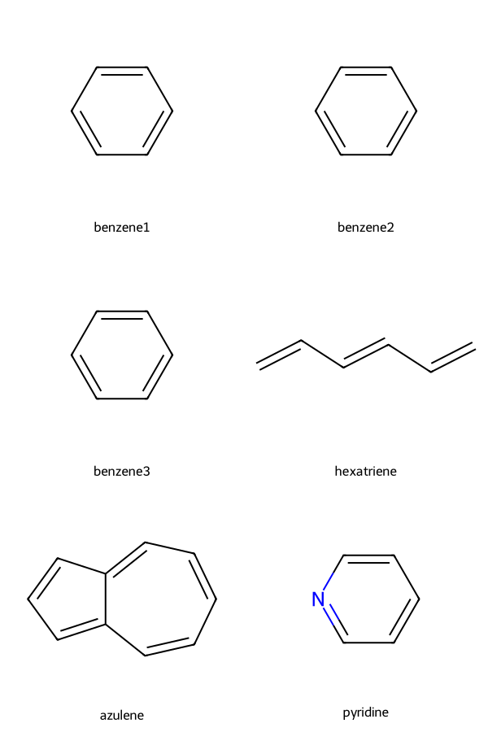
Generating an Adjacency Matrix with RDKit#
The molecular adjacency matrix indicates which atoms are bonded together, and which are not.
# Generate adjacency matrix from azulene along with image embellished by atomic indices
def mol_with_atom_index(mol):
for atom in mol.GetAtoms():
atom.SetProp("atomNote", str(atom.GetIdx()))
return mol
adjacency_matrix = rdmolops.GetAdjacencyMatrix(azulene)
print(adjacency_matrix)
azulene = mol_with_atom_index(azulene)
Draw.MolToImage(azulene, size=(300, 300))
[[0 1 0 0 0 0 0 0 0 1]
[1 0 1 0 0 0 0 0 0 0]
[0 1 0 1 0 0 0 0 0 0]
[0 0 1 0 1 0 0 1 0 0]
[0 0 0 1 0 1 0 0 0 0]
[0 0 0 0 1 0 1 0 0 0]
[0 0 0 0 0 1 0 1 0 0]
[0 0 0 1 0 0 1 0 1 0]
[0 0 0 0 0 0 0 1 0 1]
[1 0 0 0 0 0 0 0 1 0]]
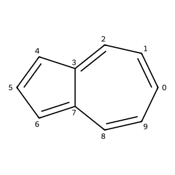
Generate the Hückel Hamiltonian from a SMILES String#
We can use the adjacency matrix to generate the Hückel Hamiltonian. The following code works only for specific atoms types, and assumes that every atom has a \(2p_z\) orbital. This code is intended only to work in the specific context of this assignment.
def get_huckel_hamiltonian_smiles(smiles, alpha_c=None, beta_c=None):
"""Return the Huckel Hamiltonian from a SMILES string.
This function constructs the Huckel Hamiltonian for a given SMILES string.
The only allowed atom types are aromatic Boron, Carbon, Nitrogen, and Oxygen atoms.
The alpha and beta parameters are taken from Rauk's work.
We do not support substituents (e.g., a carbonyl group or a nitrile bound to the ring).
We do not support nitrogen atoms that are bound to a hydrogen atom (NH) groups.
Parameters
----------
smiles : str
The SMILES string of the molecule.
alpha_c : float
The alpha parameter for Carbon atoms. The default value is -0.414.
beta_c : float
The beta parameter for Carbon-Carbon bonds. The default value is -0.0533.
Returns
-------
numpy.ndarray (shape = (n, n))
The Huckel Hamiltonian from the SMILES string.
Examples
--------
>>> get_huckel_hamiltonian_smiles('c1ccccc1')
array([[-0.414, -0.0533 , 0. , 0. , 0. , -0.0533],
[-0.0533, -0.414 , -0.0533, 0. , 0. , 0. ],
[ 0. , -0.0533, -0.414 , -0.0533, 0. , 0. ],
[ 0. , 0. , -0.0533, -0.414 , -0.0533, 0. ],
[ 0. , 0. , 0. , -0.0533, -0.414 , -0.0533],
[-0.0533, 0. , 0. , 0. , -0.0533, -0.414 ]])
"""
# If the alpha and beta parameters are not provided, use the default values.
if alpha_c is None:
alpha_c = -0.414
if beta_c is None:
beta_c = -0.0533
# Set up the dictionary of alpha and beta values.
alpha = dict()
beta = dict()
# For aromatic Boron:
alpha[5] = alpha_c + 0.45 * np.abs(beta_c)
beta[(5, 5)] = -0.87 * np.abs(beta_c) # for a B:B bond.
# For aromatic Carbon:
alpha[6] = alpha_c
beta[(5, 6)] = -0.73 * np.abs(beta_c) # for a B:C bond.
beta[(6, 6)] = beta_c # for a C:C bond.
# For aromatic Nitrogen:
alpha[7] = alpha_c - 0.51 * np.abs(beta_c)
beta[(5, 7)] = -0.66 * np.abs(beta_c) # for a B:N bond.
beta[(6, 7)] = -1.02 * np.abs(beta_c) # for a C:N bond.
beta[(7, 7)] = -1.09 * np.abs(beta_c) # for a N:N bond.
# For aromatic Oxygen:
alpha[8] = alpha_c - 2.09 * np.abs(beta_c)
beta[(5, 8)] = -0.35 * np.abs(beta_c) # for a B:O bond.
beta[(6, 8)] = -0.66 * np.abs(beta_c) # for a C:O bond.
beta[(7, 8)] = -0.80 * np.abs(beta_c) # for a N:O bond.
beta[(8, 8)] = -0.95 * np.abs(beta_c) # for a O:O bond.
# Convert the SMILES string to a molecule object.
mol = Chem.MolFromSmiles(smiles)
# Construct the adjacency matrix for the molecule
adjacency = rdmolops.GetAdjacencyMatrix(mol)
# Construct the atom list for the molecule. This is used to determine the
# alpha and beta parameters for the Huckel Hamiltonian.
atom_list = [atom.GetAtomicNum() for atom in mol.GetAtoms()]
# Get the number of atoms
n = mol.GetNumAtoms()
hamiltonian = np.zeros((n, n))
# Fill the diagonal of the Hamiltonian with the alpha values.
for i in range(n):
hamiltonian[i, i] = alpha[atom_list[i]]
# Fill the off-diagonal elements with the beta values only when there is a bond between the atoms.
for j in range(i + 1, n):
hamiltonian[i, j] = beta[tuple(sorted([atom_list[i], atom_list[j]]))]*adjacency[i, j]
hamiltonian[j, i] = hamiltonian[i, j]
return hamiltonian
Exploring Molecular Orbitals (and other properties)#
RDKit can be used to visualize molecular orbitals and other properties. The following code snippets provide useful functionality to do this.
def label_atoms_with_properties(mol, atomic_properties):
"""Label the atoms in a molecule with their properties.
This function labels the atoms in a molecule with their properties. The
primary use case is labelling the atoms with their molecular orbital (MO)
coefficients.
Parameters
----------
mol : rdkit.Chem.rdchem.Mol
The molecule to label.
atomic_properties : ndarray(shape = (n,))
A list of atomic properties to label the atoms with.
Returns
-------
mol : rdkit.Chem.rdchem.Mol
The molecule with the atoms labelled.
Examples
--------
>>> mol = Chem.MolFromSmiles('c1ccccc1',mo_coeffs[:,p])
This would label the atoms with the MO coefficients of the p-th MO.
"""
# Check to make sure that the number of atoms in the molecule
# is the same as the number of atomic properties.
n_atoms = mol.GetNumAtoms()
if len(atomic_properties) != n_atoms:
raise ValueError(
"The number of atoms in the molecule does not match the number of atomic properties."
)
# Label the atoms in the molecule with their properties.
for atom in mol.GetAtoms():
index = atom.GetIdx()
at_property = atomic_properties[index]
label = f"{index}: {float(at_property):.2f}"
atom.SetProp("atomNote", label)
return mol
# Solve the Schrodinger equation for azulene and print the MO coefficients.
hamiltonian = get_huckel_hamiltonian_smiles("c1ccc2cccc2cc1")
mo_energies, mo_coeffs, total_energy = solve_huckel(hamiltonian)
print("MO Energies:" + str(mo_energies))
# Label the atoms in azulene with the MO coefficients of the 5th MO (HOMO)
azulene_homo = label_atoms_with_properties(azulene, mo_coeffs[:, 4])
# You need to make a second copy of the molecule to plot a second orbital.
azulene2 = Chem.Mol(azulene)
azulene_lumo = label_atoms_with_properties(azulene2, mo_coeffs[:, 5])
Draw.MolsToGridImage(
[azulene_homo, azulene_lumo],
molsPerRow=2,
subImgSize=(300, 300),
legends=["HOMO", "LUMO"],
)
MO Energies:[-0.53713776 -0.5020288 -0.48625744 -0.46127578 -0.43943796 -0.39265909
-0.37468377 -0.32982768 -0.31437089 -0.30232083]
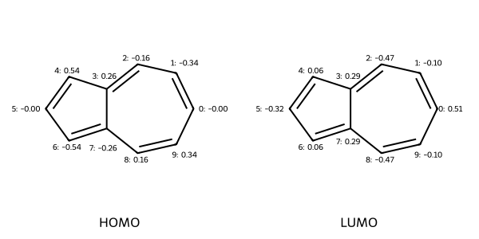
# Draw a rough contour plot of the LUMO based on the coefficients.
drawer = Draw.MolDraw2DCairo(500, 500)
fig = SimilarityMaps.GetSimilarityMapFromWeights(
azulene, mo_coeffs[:, 5].tolist(), draw2d=drawer, colorMap="jet", contourLines=10
)
drawer.FinishDrawing()
Image(data=drawer.GetDrawingText())
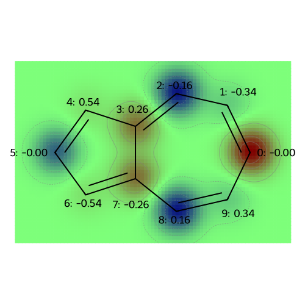
def draw_molecules_with_properties(mol, atomic_properties, legends=None):
"""Given a set of properties, plot a molecules properties
This function reads in an RDKit molecule object and a list of
atomic properties for the molecule, and then generates a grid
of structures labelled with the properties.
Parameters
----------
mol : rdkit.Chem.rdchem.Mol
The n-atom molecule to label.
atomic_properties : ndarray(shape = (n,m))
A list of atomic properties to label the atoms with.
Each of the m columns represents a property/label.
legends : list of length m
A list of legends for the atomic properties.
Returns
-------
Grid image of labelled molecular drawings
"""
# Check to make sure the number of atoms in the molecule is equal to the
# first (zeroth) dimension of the properties.
n_atoms = mol.GetNumAtoms()
if atomic_properties.shape[0] != n_atoms:
raise ValueError(
"The number of atoms in the molecule does not match the number of atomic properties."
)
# If only one property is passed in, then make it a 2D array.
if len(atomic_properties.shape) == 1:
atomic_properties = np.reshape(atomic_properties, (n_atoms, 1))
n_properties = atomic_properties.shape[1]
# Make sure that the length of the legends is equal to the number of properties.
# If no legends given, then use the array position.
if legends is None:
legends = [f"{i}" for i in range(atomic_properties.shape[1])]
elif len(legends) != atomic_properties.shape[1]:
raise ValueError(
"The number of legends does not match the number of properties."
)
# Make copies of the molecule for each property.
mols = [Chem.Mol(mol) for _ in range(atomic_properties.shape[1])]
# If no legends given, index by array position.
if legends is None:
legends = [f"{i}" for i in range(n_properties)]
elif len(legends) != n_properties:
raise ValueError(
"The number of legends does not match the number of properties."
)
# Label the atoms in the molecule with their properties.
for i, prop in enumerate(atomic_properties.T):
mols[i] = label_atoms_with_properties(mols[i], prop)
# Draw the molecules.
return Draw.MolsToGridImage(
mols,
molsPerRow=2,
subImgSize=(300, 300),
legends=legends,
)
legends = [f"MO: {i}" for i in range(np.shape(mo_coeffs)[1])]
draw_molecules_with_properties(azulene, mo_coeffs, legends)
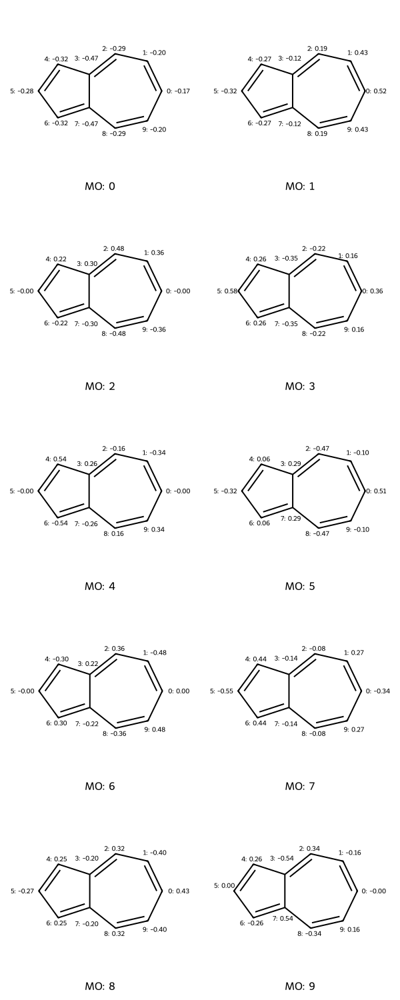
# This function generates a grid of contour plots showing atomic properties.
def visualize_molecules_with_properties(mol, atomic_properties, legends=None):
"""Draw contour plots visualizing the atomic properties.
This generates a grid of contour plots showing atomic properties.
Parameters
----------
mol : RDKit molecule object
The molecule of interest.
atomic_properties : ndarray(shape = (n,m))
A list of atomic properties to label the atoms with.
Each of the m columns represents a property/label.
legends : list of length m
A list of legends for the atomic properties. If None, then the
legends are the column numbers.
Returns
-------
Grid image of labelled molecular drawings
"""
# Check to make sure the number of atoms in the molecule is equal to the
# first (zeroth) dimension of the properties.
n_atoms = mol.GetNumAtoms()
# If only one property is passed in, then make it a 2D array.
if len(atomic_properties.shape) == 1:
atomic_properties = np.reshape(atomic_properties, (n_atoms, 1))
n_properties = atomic_properties.shape[1]
if atomic_properties.shape[0] != n_atoms:
raise ValueError(
"The number of atoms in the molecule does not match the number of atomic properties."
)
# Make sure that the length of the legends is equal to the number of properties.
# If no legends given, then use the array position.
if legends is None:
legends = [f"{i}" for i in range(n_properties)]
elif len(legends) != n_properties:
raise ValueError(
"The number of legends does not match the number of properties."
)
drawer = Draw.MolDraw2DCairo(500, 500)
print("The following plots correspond to the following atomic property labels:")
for i in range(n_properties):
print(f"{legends[i]}")
label_atoms_with_properties(mol, atomic_properties[:, i])
fig = SimilarityMaps.GetSimilarityMapFromWeights(
mol, atomic_properties[:, i].tolist(), draw2d=drawer, colorMap="jet", contourLines=10
)
drawer.FinishDrawing()
display(Image(data=drawer.GetDrawingText())) # Show image inline
return None
legends = [f"MO: {i}" for i in range(np.shape(mo_coeffs)[1])]
visualize_molecules_with_properties(azulene, mo_coeffs, legends)
The following plots correspond to the following atomic property labels:
MO: 0
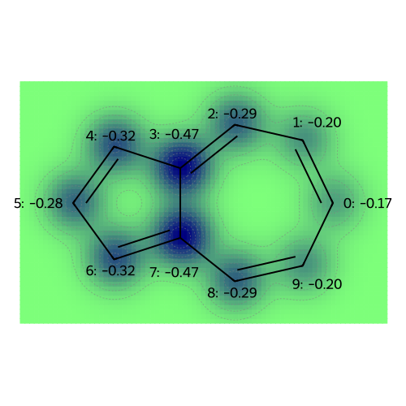
MO: 1
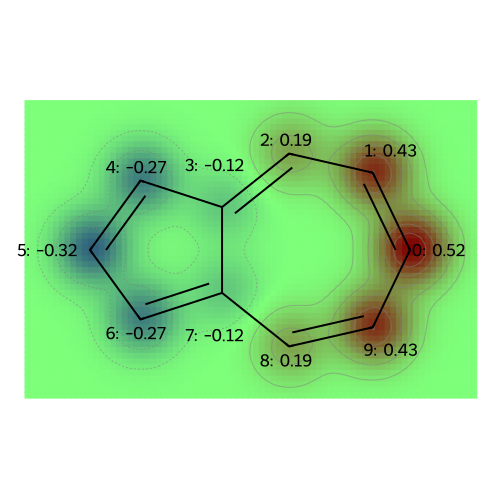
MO: 2
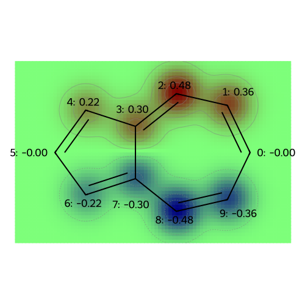
MO: 3
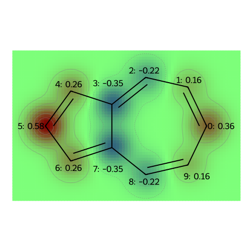
MO: 4
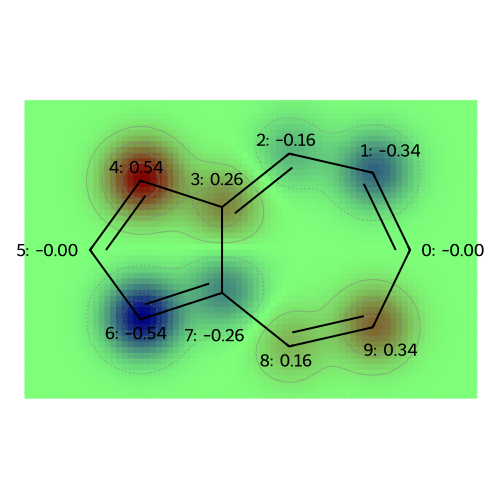
MO: 5
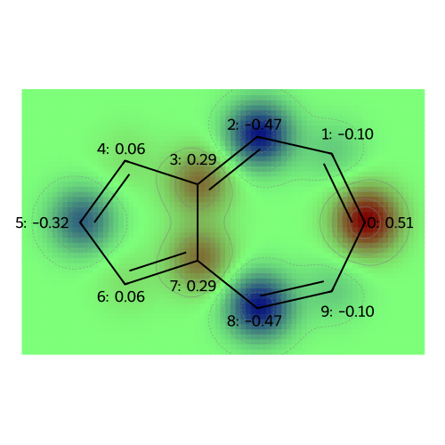
MO: 6
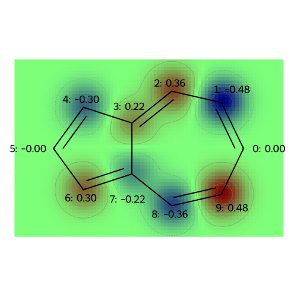
MO: 7
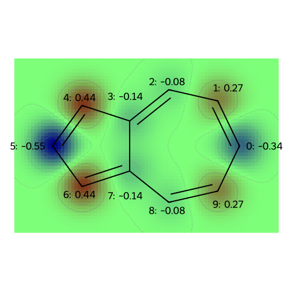
MO: 8
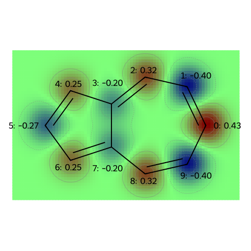
MO: 9
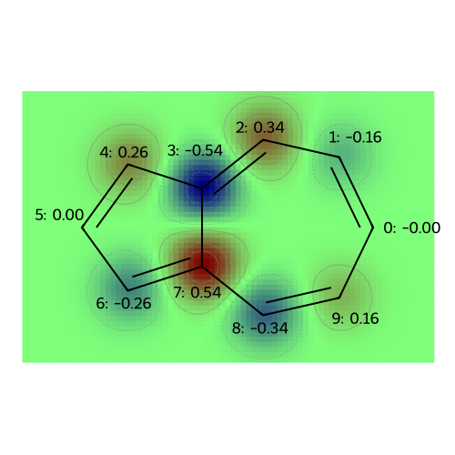
Molecular Properties: Atomic Charges (and Multipole Moments)#
At the level of Hückel theory, the atomic population is the probability of observing a \(\pi\)-electron on each atom. The atomic charge is based on the idea that the sigma framework (and lone pairs, for oxygen) neutralizes most of the nuclear charge, so that the remaining charge deficiency is merely +1 (requiring one electron to achieve charge neutrality) for Boron (bonded only to other atoms in the ring), Carbon (bonded to a hydrogen), and Nitrogen (with a lone pair); for Oxygen (with a lone pair) the core charge is +2 for Oxygen.
To compute the dipole moment, we need to know the positions of the atoms. RDKit will give approximate positions, so that the dipole moment can be computed from the charges.
def compute_atomic_charges(mol, mo_coeffs, mo_energies, n_pi_electrons=None):
"""Compute the atomic charges from the MO coefficients.
This function computes the atomic charges from the MO coefficients.
The atomic charges are calculated as the sum of the squares of the MO coefficients.
Parameters
----------
mol : rdkit.Chem.rdchem.Mol
The molecule to calculate the atomic charges for.
mo_coeffs : numpy.ndarray (shape = (n, m))
The MO coefficients for the molecule. Usually m is equal
to the number of atoms, but this isn't strictly required
as only the occupied orbitals are necessary. The MO energies and coefficients
are in increasing order of energy.
mo_energies : numpy.ndarray (shape = (m,))
The MO energies for the molecule. These are in increasing order of energy.
n_pi_electrons : int
The number of pi-electrons in the molecule. If not provided, the number of
pi-electrons is assumed based on the number and type of atoms. Specifically,
each Carbon atom contributes 1 pi-electron, Nitrogen and Oxygen atoms contribute
2 pi-electrons, and Boron contributes no pi-electrons.
Returns
-------
numpy.ndarray (shape = (n,))
The atomic charges for the molecule.
numpy.ndarray (shape = (n,))
The atomic populations for the molecule.
"""
# Check to make sure that the number of atoms in the molecule
# is the same as the number of atomic properties.
n_atoms = mol.GetNumAtoms()
n_mos = mo_coeffs.shape[1]
if mo_coeffs.shape[0] != n_atoms:
raise ValueError(
"The number of atoms in the molecule does not match the number of MO coefficients."
)
# Make sure that the number of MOs provided is no larger than the number of atoms
if n_mos > n_atoms:
raise ValueError(
"The number of MOs is larger than the number of atoms. This means the MOs are linearly dependent."
)
# Check to make sure that the number of MO energies is the same as the number of MO coefficients.
if len(mo_energies) != n_mos:
raise ValueError(
"The number of MO energies does not match the number of MO coefficients."
)
# Check to make sure that the MO energies are in nondecreasing order.
if not np.all(np.diff(mo_energies) >= 0):
raise ValueError("The MO energies are not in nondecreasing order.")
# If the number of pi-electrons is not provided, calculate it based on the number of atoms.
# Also compute the base charge for each element
core_charge = np.zeros(n_atoms)
if n_pi_electrons is None:
n_pi_electrons = 0
for atom in mol.GetAtoms():
atomic_num = atom.GetAtomicNum()
if atomic_num == 6:
n_pi_electrons += 1
core_charge[atom.GetIdx()] = 1
elif atomic_num == 7:
n_pi_electrons += 2
core_charge[atom.GetIdx()] = 1
elif atomic_num == 8:
n_pi_electrons += 2
core_charge[atom.GetIdx()] = 2
elif atomic_num == 5:
core_charge[atom.GetIdx()] = 1
else:
raise ValueError(f"Atomic number {atomic_num} not supported.")
# Calculate the orbital occupation numbers
n_mo = np.zeros(n_mos) # initialize orbital occupation numbers
# Check to see if the HOMO is degenerate. The HOMO is the orbital
# ni_pi_electrons / 2 (if the number of pi electrons is even)
# and n_pi_electrons / 2 + 1 (if the number of pi electrons is odd)
# The HOMO orbital index is then below. The minus one occurs because the
# lowest orbital has index zero (not one).
p_HOMO = n_pi_electrons // 2 + n_pi_electrons % 2 - 1
# Determine the degenerate molecular orbitals
degenerate_mos = []
for i in range(n_mos):
if mo_energies[i] == mo_energies[p_HOMO]:
degenerate_mos.append(i)
# The number of electrons in the degenerate MOs is
n_degen_electrons = n_pi_electrons - degenerate_mos[0]*2
for i in range(n_mos):
if i < degenerate_mos[0]:
# up until the HOMO, all orbitals are doubly-occupied.
n_mo[i] = 2
elif i > degenerate_mos[-1]:
# beyond the (possibly degenerate) HOMOs, all orbitals
# are empty
n_mo[i] = 0
else:
# When there is degeneracy, the charge and dipole moment are not well-defined. We need to
# make a choice. We choose to occupy the degenerate orbitals equally.
n_mo[i] = n_degen_electrons/len(degenerate_mos)
# Atomic charges consist of adding up the square of the molecular orbital coefficient times the occupation numbers
# over all the orbitals,
atomic_populations = np.zeros(n_atoms)
for i in range(n_atoms):
atomic_populations[i] = np.dot(mo_coeffs[i,:]**2,n_mo)
# Atomic charges are the atomic core charge minus the number of pi electrons on the atoms,
atomic_charges = core_charge - atomic_populations
return atomic_charges, atomic_populations
def compute_molecular_dipole(mol,atomic_charges):
"""Compute a molecules dipole moment (in Debye).
This function computes the dipole moment of a molecule from the atomic charges.
The dipole moment is calculated as the sum of the atomic charges times their positions (minus the center of mass).
Parameters
----------
mol : rdkit.Chem.rdchem.Mol
The molecule to calculate the dipole moment for.
atomic_charges : numpy.ndarray (shape = (n,))
The atomic charges for the molecule.
Returns
-------
numpy.ndarray (shape = (3,))
The dipole moment of the molecule in Debye.
"""
# Check to make sure that the number of atoms in the molecule
# is the same as the number of atomic properties.
n_atoms = mol.GetNumAtoms()
if len(atomic_charges) != n_atoms:
raise ValueError(
"The number of atoms in the molecule does not match the number of atomic charges."
)
# Get the coordinates of the atoms in the molecule.
# Generate 3D coordinates
AllChem.EmbedMolecule(mol, AllChem.ETKDG())
# Get the conformer (geometry)
conf = mol.GetConformer()
# Extract coordinates
atomic_positions = [conf.GetAtomPosition(i) for i in range(mol.GetNumAtoms())]
# Convert to a numpy array; then convert from Angstroms to atomic units.
coords = np.array([(p.x, p.y, p.z) for p in atomic_positions])
coords *= 1.88973 # Convert from Angstroms to atomic units.
# Get the atomic masses of the atoms in the molecule.
atomic_masses = np.array([atom.GetMass() for atom in mol.GetAtoms()])
# Calculate the center of mass of the molecule.
center_of_mass = np.sum(coords * atomic_masses[:, np.newaxis], axis=0) / np.sum(
atomic_masses
)
# Calculate the dipole moment.
dipole_moment = np.sum(
(coords - center_of_mass) * atomic_charges[:, np.newaxis], axis=0
)
# Convert to Debye (1 Debye = 2.541746 a.u.)
dipole_moment *= 2.541746
return dipole_moment
atomic_charges, atomic_populations = compute_atomic_charges(azulene, mo_coeffs, mo_energies)
dipole_moment = compute_molecular_dipole(azulene, atomic_charges)
print(f"The dipole moment of azulene is {dipole_moment} Debye.")
print(f"The magnitude of the dipole moment of azulene is {np.linalg.norm(dipole_moment)} Debye.")
# Visualize atomic charges for the azulene molecule
legends = [f"atomic charges"]
visualize_molecules_with_properties(azulene, atomic_charges, legends)
legends = [f"atomic populations"]
visualize_molecules_with_properties(azulene, atomic_populations, legends)
The dipole moment of azulene is [-6.33547703 -0.14843086 0.73536286] Debye.
The magnitude of the dipole moment of azulene is 6.3797382001651215 Debye.
The following plots correspond to the following atomic property labels:
atomic charges
[12:48:22] Molecule does not have explicit Hs. Consider calling AddHs()
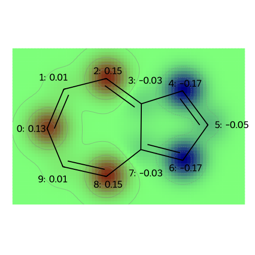
The following plots correspond to the following atomic property labels:
atomic populations
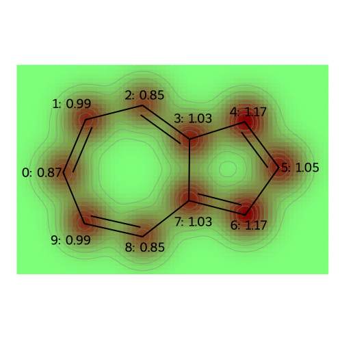
Transition Dipole Moments#
To determine whether a transition from an occupied molecular orbital to an unoccupied molecular orbital is allowed, we need to compute the transition dipole moment. To do this, we use the same formula as the dipole moment, but using the transition density.
def compute_transition_dipole(mol, mo_coeffs, n_i, n_f):
"""Compute the transition dipole moment from the MO coefficients.
This function computes the transition dipole moment from the MO coefficients.
The transition dipole moment is calculated from the product of the MO coefficients
in the intial and finial orbitals
Parameters
----------
mol : rdkit.Chem.rdchem.Mol
The molecule to calculate the transition dipole moment for.
mo_coeffs : numpy.ndarray (shape = (n, m))
The MO coefficients for the molecule. Usually m is equal
to the number of atoms, but this isn't strictly required
as only the occupied orbitals are necessary. The MO energies and coefficients
are in increasing order of energy.
n_i : int
The index of the initial orbital.
n_f : int
The index of the final orbital.
Returns
-------
numpy.ndarray (shape = (3,))
The transition dipole moment of the molecule in Debye.
"""
# Check to make sure that the number of atoms in the molecule
# is the same as the number of MO coefficients
n_atoms = mol.GetNumAtoms()
n_mos = mo_coeffs.shape[1]
if mo_coeffs.shape[0] != n_atoms:
raise ValueError(
"The number of atoms in the molecule does not match the number of MO coefficients."
)
# Make sure that the initial and final orbitals are within the range of MOs
if min(n_i, n_f) < 0:
raise ValueError(
"Initial and final orbital indices cannot be negative."
)
if max(n_i, n_f) >= n_mos:
raise ValueError(
"Initial and final orbital indices cannot be larger than the number of MOs."
)
# Compute the atomic positions
# Generate 3D coordinates
AllChem.EmbedMolecule(mol, AllChem.ETKDG())
# Get the conformer (geometry)
conf = mol.GetConformer()
# Extract coordinates
atomic_positions = [conf.GetAtomPosition(i) for i in range(mol.GetNumAtoms())]
# Convert to a numpy array; then convert from Angstroms to atomic units.
coords = np.array([(p.x, p.y, p.z) for p in atomic_positions])
coords *= 1.88973 # Convert from Angstroms to atomic units.
# Get the atomic masses of the atoms in the molecule.
atomic_masses = np.array([atom.GetMass() for atom in mol.GetAtoms()])
# Calculate the center of mass of the molecule.
center_of_mass = np.sum(coords * atomic_masses[:, np.newaxis], axis=0) / np.sum(
atomic_masses
)
# Calculate the transition dipole moment.
transition_dipole = np.sum(
(coords - center_of_mass) * (mo_coeffs[:, n_i] * mo_coeffs[:, n_f])[:, np.newaxis], axis=0
)
# Convert to Debye (1 Debye = 2.541746 a.u.)
transition_dipole *= 2.541746
return transition_dipole
# Look at the excitation from the HOMO to the LUMO and print out the dipole moment
# and its size
transition_dipole = compute_transition_dipole(azulene, mo_coeffs, 4, 5)
print(f"The transition dipole moment of azulene (HOMO to LUMO) is {transition_dipole} Debye.")
print(f"The magnitude of the transition dipole moment is {np.linalg.norm(transition_dipole)} Debye.")
# Plot the orbital product
coeffs = mo_coeffs[:, 4] * mo_coeffs[:, 5]
# Visualize atomic charges for the azulene molecule
legends = [f"product of HOMO and LUMO orbitals"]
visualize_molecules_with_properties(azulene, coeffs, legends)
The transition dipole moment of azulene (HOMO to LUMO) is [-0.01674969 -2.42803264 0.11772008] Debye.
The magnitude of the transition dipole moment is 2.430942428532167 Debye.
The following plots correspond to the following atomic property labels:
product of HOMO and LUMO orbitals
[12:48:22] Molecule does not have explicit Hs. Consider calling AddHs()
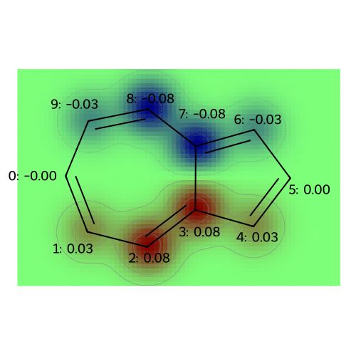
🤔 Thought-Provoking Questions#
Based on the expression for the energy-levels and wavefunctions for polyacetylene, can you explain why the particle-in-a-box is a good model for a cyanine dye? How would you construct a Hückel Hamiltonian for two-dimensional particle in a box? For a three-dimensional particle in a box?
Can you explain, intuitively, why azulene has a substantial dipole moment?
Can you give an visual explanation for the allowed and forbidden transitions in polyacetylene?
⚖️ Marking Scheme#
☑️ Successful completion of the notebook, together with the ability to discuss your strategy, earns an S.
💰 For an S+, complete two of the following tasks:
Solve the mathematical exercise.
There are three different ways to add one Nitrogen and one Boron at to an aromatic ring. What is the lowest-energy choice? Can you give a conceptual explanation for this choice? There are also three different ways to add three nitrogen atoms and three boron atoms to an aromatic ring. What is the lowest-energy choice? Can you give a conceptual explanation for this choice?
Answer at least three of the thought-provoking questions.
Add markdown cells to complete these tasks. You can add images of hand-written answers to the markdown cells if you prefer, but write neatly.
# Look at pyridine
hamiltonian = get_huckel_hamiltonian_smiles(smiles="c1ccncc1")
mo_energies, mo_coeffs, total_energy = solve_huckel(hamiltonian)
print("Molecular Orbital Energies:", mo_energies)
legends = [f"MO: {i}" for i in range(np.shape(mo_coeffs)[1])]
visualize_molecules_with_properties(pyridine, mo_coeffs, legends)
atomic_charges, atomic_populations = compute_atomic_charges(pyridine, mo_coeffs, mo_energies)
dipole_moment = compute_molecular_dipole(pyridine, atomic_charges)
print(f"The dipole moment of pyridine is {dipole_moment} Debye.")
print(f"The magnitude of the dipole moment of pyridine is {np.linalg.norm(dipole_moment)} Debye.")
# Visualize atomic charges for the pyridine molecule
legends = [f"atomic charges"]
visualize_molecules_with_properties(pyridine, atomic_charges, legends)
legends = [f"atomic populations"]
visualize_molecules_with_properties(pyridine, atomic_populations, legends)
Molecular Orbital Energies: [-0.52741628 -0.47683491 -0.4673 -0.36848972 -0.3607 -0.31044209]
The following plots correspond to the following atomic property labels:
MO: 0
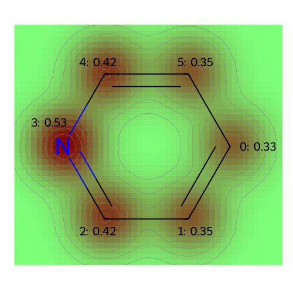
MO: 1
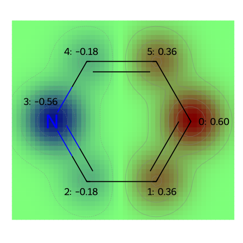
MO: 2
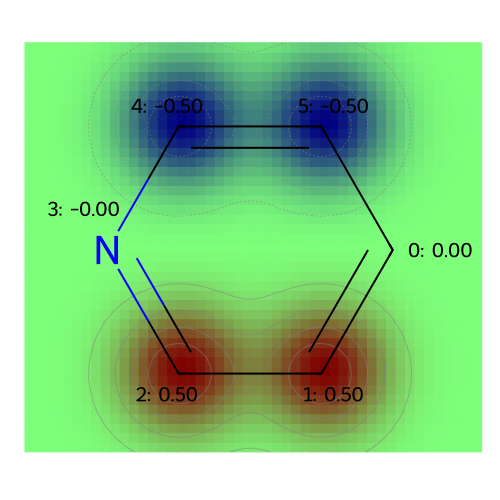
MO: 3
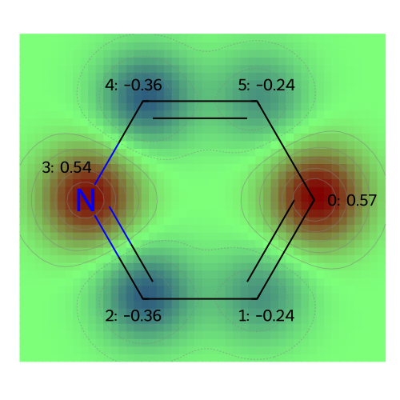
MO: 4
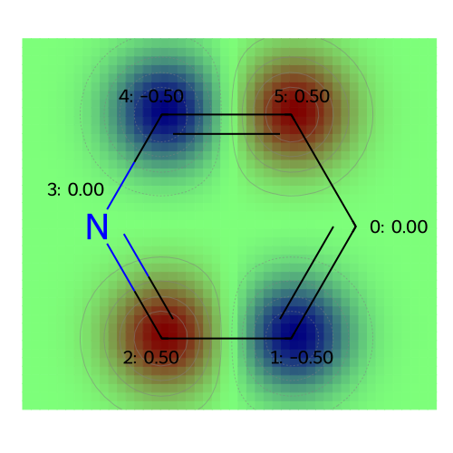
MO: 5
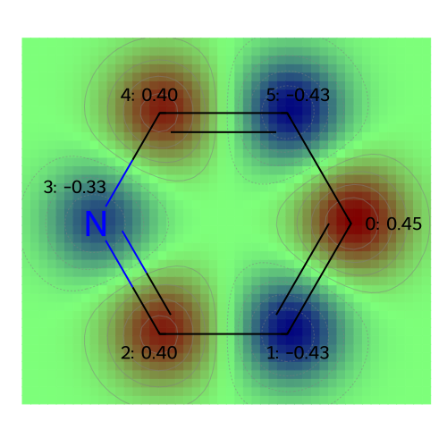
The dipole moment of pyridine is [0.97769467 0.5636719 0.0959975 ] Debye.
The magnitude of the dipole moment of pyridine is 1.1326201483663665 Debye.
The following plots correspond to the following atomic property labels:
atomic charges
[12:48:22] Molecule does not have explicit Hs. Consider calling AddHs()
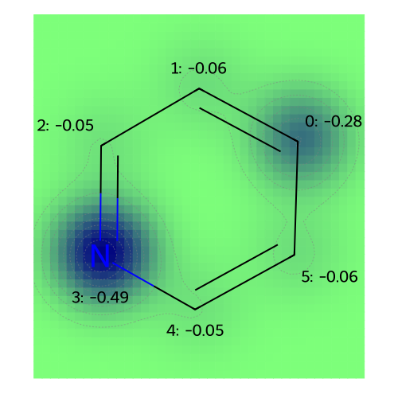
The following plots correspond to the following atomic property labels:
atomic populations
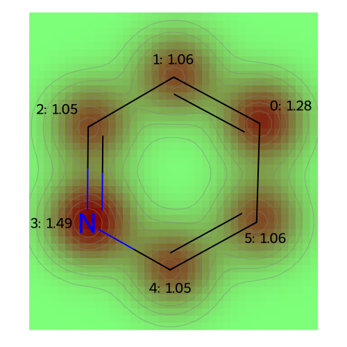
# Solve the Schrodinger equation for benzene and print the MO coefficients.
hamiltonian = get_huckel_hamiltonian_smiles("c1ccccc1")
mo_energies, mo_coeffs, total_energy = solve_huckel(hamiltonian)
print("MO Energies:" + str(mo_energies))
coeffs = np.zeros((mo_coeffs.shape[0]))
for i in range(3):
for j in range(3, 6):
coeffs += mo_coeffs[:, i] * mo_coeffs[:, j]/(mo_energies[j] - mo_energies[i])
visualize_molecules_with_properties(benzene1, coeffs, legends)
MO Energies:[-0.5206 -0.4673 -0.4673 -0.3607 -0.3607 -0.3074]
The following plots correspond to the following atomic property labels:
atomic populations
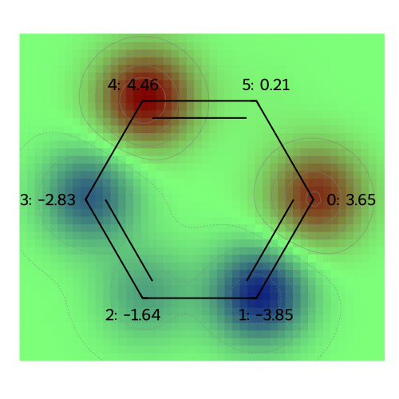